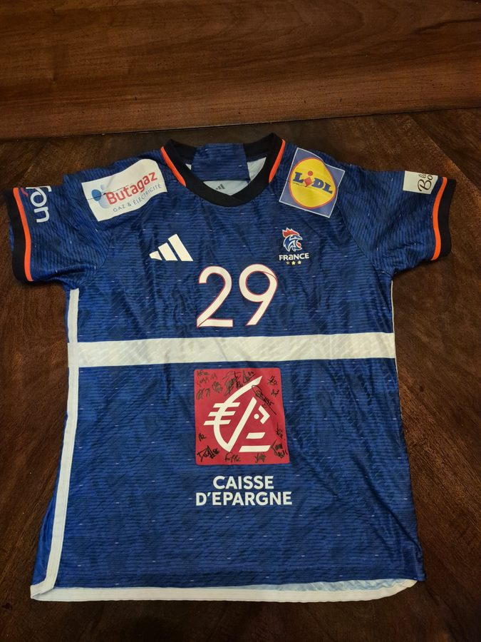
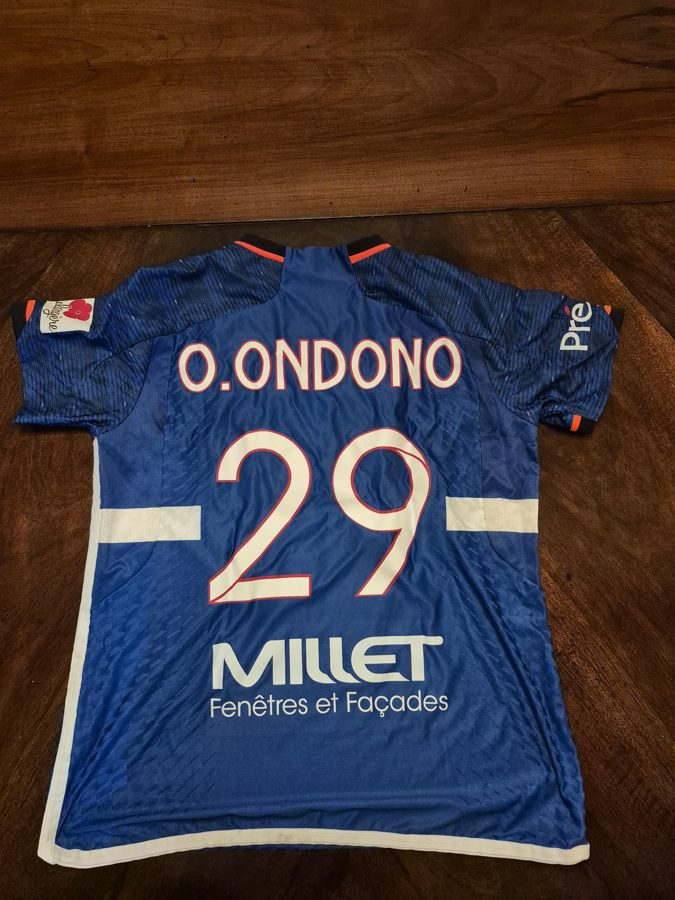
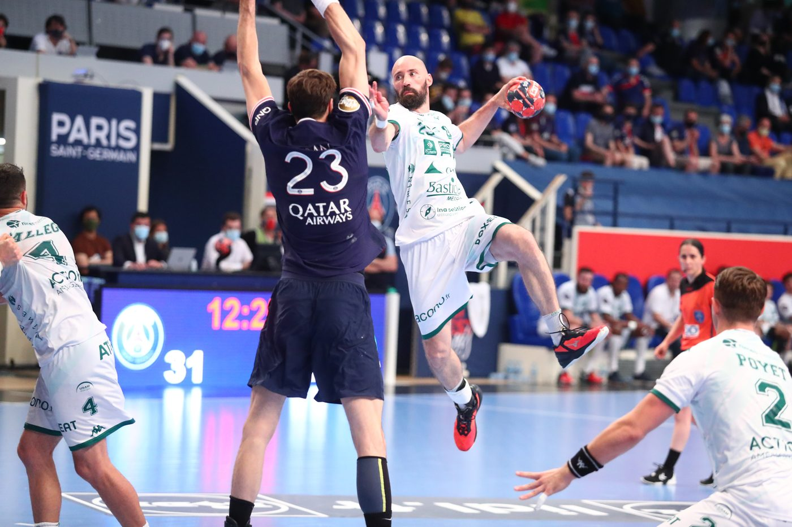

CalCup XX raffle
Raffle
Three jerseys, drawn live at the Sunday finals.
CalCup XX raffle
Three jerseys, drawn live at the Sunday finals.
FranceWomen's national teamSigned


A France women's national team jersey, number 29 (O. Ondono), signed by the players of Les Bleues.
CalHeatFrance men's national teamSigned
A CalHeat jersey signed by the players of Les Bleus, the French men's national team.

SloveniaRight wing / right backEHF Hall of Fame, 2023
One of the most decorated wings of his generation, a two time Champions League winner and a member of the EHF Hall of Fame since 2023.
Club career
Major titles
The jersey is the white away jersey he wore in competition for Nîmes in his final season. Vid donated it to support CalCup and youth handball in the Bay Area.